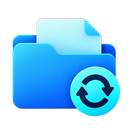

Automatic downloads
Checks Blackboard every hour in the background, downloads new files by itself and sends you a notification.

Blackboard SyncFor macOS and Windows
Downloads your Blackboard course content to your computer automatically.
View on GitHubFree. Open source. Focus on your courses.
Less hassle, more time
Checks Blackboard every hour in the background, downloads new files by itself and sends you a notification.
Files are saved in a University folder by term and course.
Untick the courses you don’t want; deleted or damaged files come back by themselves.
Archive downloads are being redesigned. Existing downloaded files stay on your computer.
When a new version is out you get a notification; just press Update.
Remove the app and its data with one button in Settings.
Download. Install. Sign in.
Open the .dmg and drag the app into the Applications folder.
Run Setup.exe. If SmartScreen warns you, choose More info → Run anyway.
On first launch choose your school’s address and the folder to save files in, then Sign in. The app is in English or Turkish; pick one in Settings.
You type your password only into your school’s own sign-in page; the app never sees it and never stores it. The saved sign-in session stays on your computer and is sent only to your school’s Blackboard server. Optional Google Calendar shares deadline details with Google; see our privacy policy.